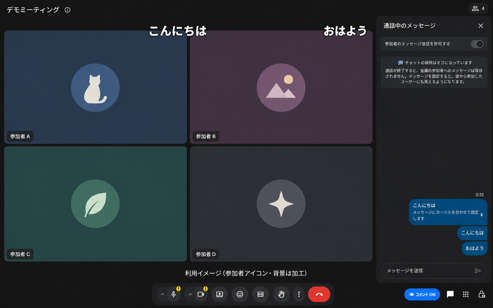
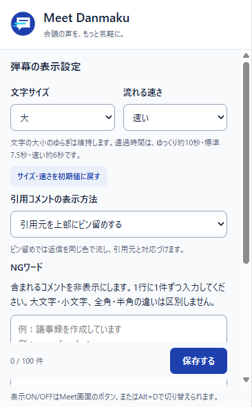

画面に流れるコメント
Google Meet のチャットを右から左へ表示。会議画面の「コメント ON/OFF」で、必要なときだけ使えます。
GOOGLE MEET 用 CHROME 拡張機能
いつものチャットが、画面を流れるコメントに。
ひとことの反応を、会議のにぎわいに変えます。
無料 / 個人開発 / チャット本文は端末内で処理

チャットに書くだけ。
発言のタイミングを逃さない。
FEATURES
別の投稿サービスへの登録や、コメント用サーバーの準備は不要です。
Google Meet のチャットを右から左へ表示。会議画面の「コメント ON/OFF」で、必要なときだけ使えます。
通常の会議チャットと、Meet に埋め込まれた Google Chat に対応。チャット方式を選ぶ設定は不要です。
文字サイズ・速さ・引用の表示を調整。定型文など、流したくない言葉はNGワードで除外できます。
弾幕は拡張機能を導入したブラウザーに表示されます。元のチャットや、他の参加者の設定は変更しません。

MAKE IT YOURS
設定はあなたのブラウザーに保存。
会議に合わせて、いつでも変えられます。
「サイズ・速さを初期値に戻す」は、この2項目だけを標準に戻します。
HOW TO USE
ストア公開後、Chrome に Meet Danmaku を追加してください。開いている Meet は再読み込みします。
会議画面の「コメント ON/OFF」で表示を切り替えます。流れないときはチャットパネルを開いてください。
新しい投稿が弾幕として流れます。見え方は拡張機能アイコンから調整し、「保存する」を押します。
弾幕が共有先や録画に映る場合があります。必要に応じて表示をOFFにしてください。
FOR TEAMS
管理対象の Chrome では、管理者が拡張機能を自動インストールするポリシーを設定できます。対象の利用者に、一人ずつ追加操作を依頼せずに配布できます。
Google 管理コンソールの「アプリと拡張機能」→「ユーザーとブラウザ」で対象を選び、インストール ポリシーを「自動インストールする」に設定します。
管理対象のアカウント・ブラウザーと管理権限が必要です。Workspace の契約だけで、すべての参加者へ自動配布されるわけではありません。ストア公開後、管理者が小規模な対象で確認してから導入してください。
Google 公式の導入手順SUPPORT & PRIVACY
対応環境や動かないときの確認方法、データの取り扱いをまとめています。